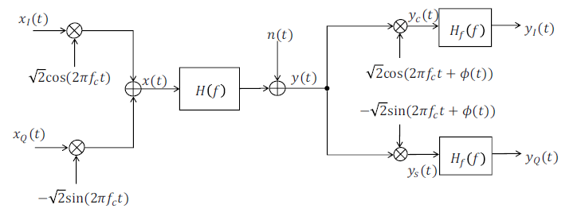
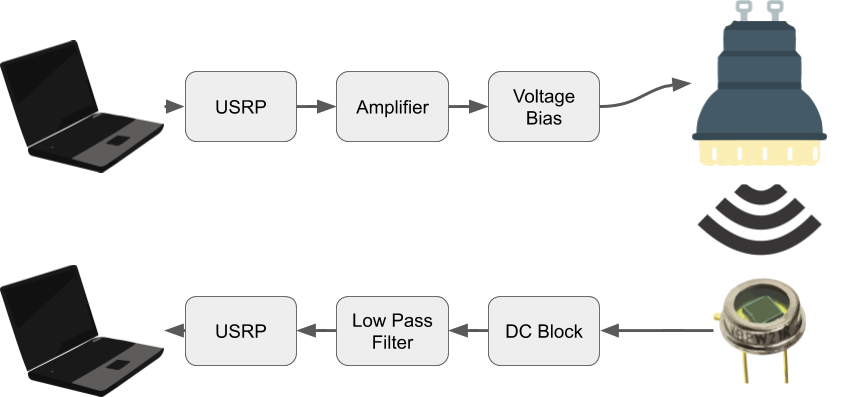
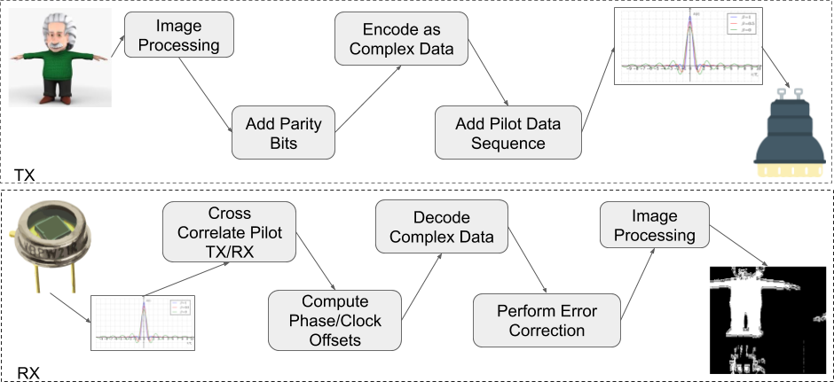
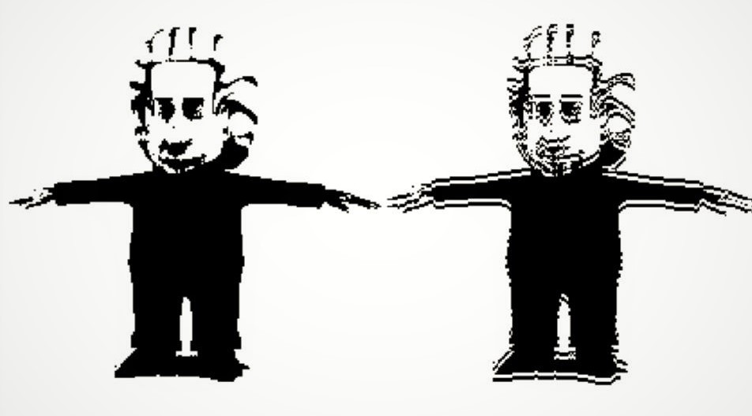

Wireless Communication through Light-Emitting-Diode Lightbulbs
We exploited the orthogonality of sine and cosine functions and encoded our information to be transmitted in the quadrature amplitude modulation (QAM).
Our physical system was set up in such a way that a laptop on the transmitting end passed the encoded information through a Universal Serial Radio Peripheral and an amplifier to apply the corresponding voltage bias to drive the LED. On the receiving end, a photodiode produced a voltage output in response to the LED switching. The voltage signal is passed through another USRP and back to another laptop.
Our software pipeline consists of 1) image processing to convert a colored image to greyscale and 2) data preparation, including encoding and error-correcting and pilot bits addition, to get their data ready to send. The pipeline on the receiving end is similar but done in the reverse order.
Our best result transmitted over 25 inches is shown below. It has an error rate of just under 2%.
 To attest to the usefulness of LiFi, we produced the following video detailing our LiFi story.You can read about our project in details on the related link on the left.